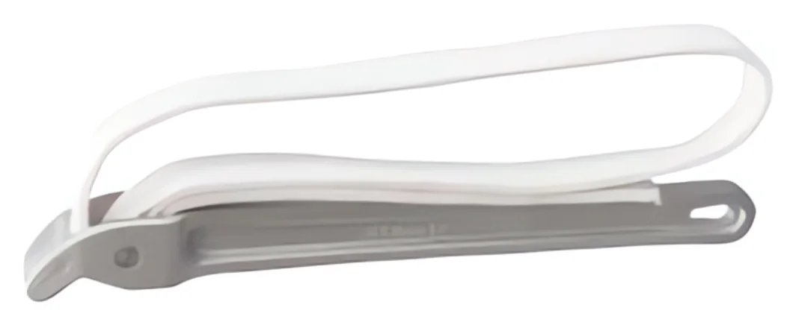

GROZ · Automotive Tools & Accessories
Strap Wrench
CAT NR STW/12G · ORD NR 62009
| CAT NR (catalogue number) | STW/12G |
|---|---|
| ORD NR (order number) | 62009 |
| Box quantity | 25 |
| For objects with dia. (inch) | 7 |
| For objects with dia. (mm) | 175 |
| Handle length (inch) | 12 |
| Handle length (mm) | 300 |
| Strap length (inch) | 36 |
| Strap length (mm) | 914 |
| Strap width (inch) | 1-1/16 |
| Strap width (mm) | 27 |
Ask for a quote The catalogue PDF, page 122
“Ask for a quote” opens this product in the catalogue: add it to your quote and send it. Buyers from Africa, the Gulf and worldwide are welcome; prices in USD, EUR or INR.
From the GROZ Workshop Tools CB-05 catalogue. Not yet verified: these details were read from the printed catalogue automatically; check the catalogue page before ordering.